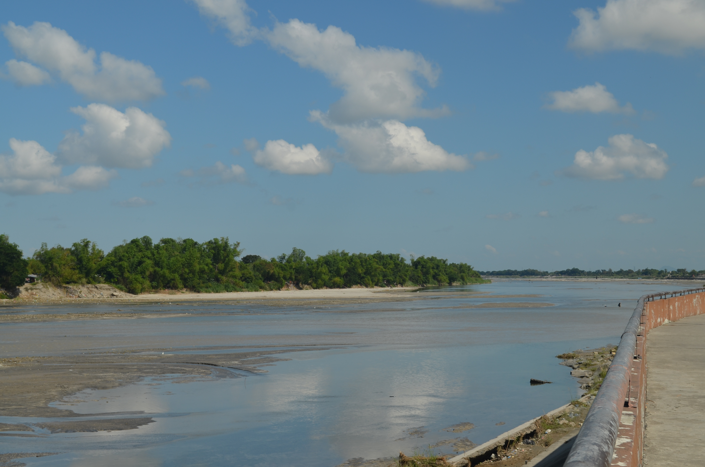

Rivers & Waterways
Tarlac's rivers and waterways are the lifeblood of the province, sustaining its farmlands and communities while offering scenic natural beauty for visitors to enjoy.
-
Pampanga River
-

Tarlac River -
 Bamban River
Bamban River
- Pampanga River: One of Luzon's major river systems flowing through Tarlac, offering riverside walks, fishing, and beautiful early morning views across the lowland plains.
- Tarlac River: Running through Tarlac City, this river is central to the province's irrigation network and serves as a peaceful backdrop for walks along its banks.
- Bamban River: A scenic river popular for weekend recreation, fishing, and riverside picnics among locals and visiting families alike.